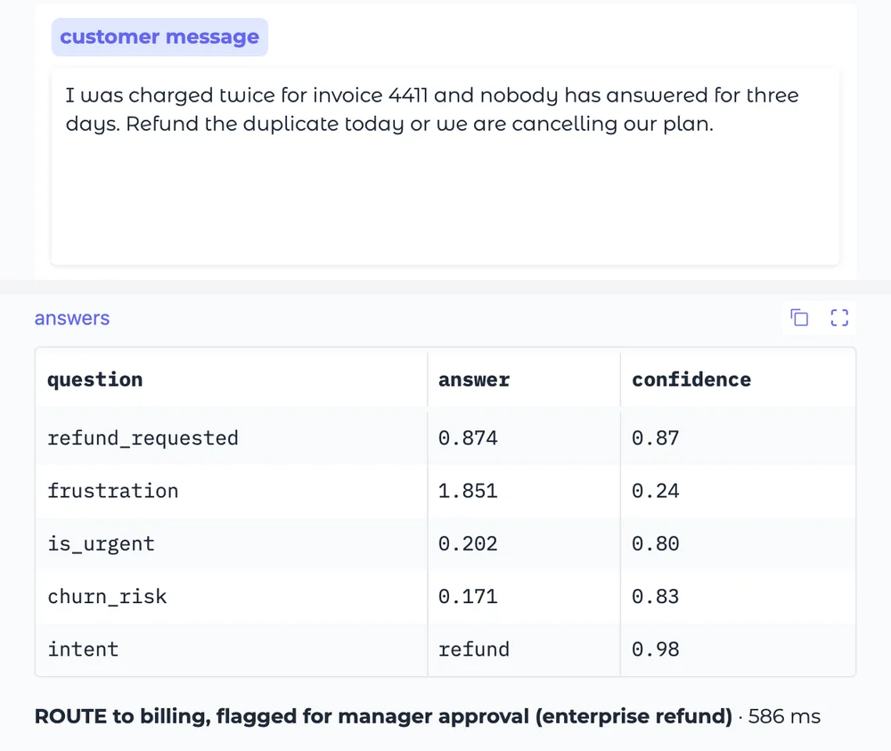

laya
A tiny AI sorting clerk: it reads a message and answers multiple-choice questions about it in a blink
Give it a customer email and ask "which team?", "how urgent?", "will they cancel?". It answers them all at once, in milliseconds, on your own machine, instead of waiting on a chat AI you pay for each time.

How does it work?
Your software makes hundreds of small calls a day: which team gets this email? Is it urgent? Will they cancel?
Asking a chat AI each time means a fee per call, a wait, and a paragraph your software has to decode.
Every time a new message or task comes in, your software asks laya instead of a paid chat AI
A support inbox, a chatbot or an AI agent calls it once per email, ticket or job, as it arrives.
The message, plus your multiple-choice questions
"I was charged twice for invoice 4411... Refund the duplicate today or we are cancelling our plan." Which intent? How urgent? Will they cancel?
It reads the message once and scores every answer at the same time
- Reads the whole message in one go
- Scores every option of every question at once, instead of writing a reply word by word
- Picks the top option for each question and says how sure it is
It never writes sentences, so it can't ramble or answer with something that isn't on your list.
Answers your software can act on straight away
- One answer per question, always from your listIntent: refund request, 98% sure
- A score for every optionFrustration 1.85 out of 3, urgency 0.20, churn risk 0.17
- A decision in about half a secondRoute to billing and flag for manager approval: 586 milliseconds in the live demo
What changes for me?
Without it
- Every small decision is a full chat-AI call: billed per use, and slower than it needs to be.
- The answer comes back as sentences your software has to decode, and it can go off-script.
- Customer data leaves your building for someone else's servers.
With it
- About 33 milliseconds per decision, in 100+ languages (the author's measurement).
- The answer is always one of your options, with a probability you can set rules on.
- It runs on your own machine: free to use (Apache-2.0 license), and the data stays put.
How hard is it to try?
Effort
- Try it in your browser first: open the live demo, paste any customer message and press Ask. Nothing to install.
- To use it for real, a developer installs it with one line and follows the quickstart to ask it questions from their code.
- For better accuracy, they train it on your own past decisions with the author's free training notebook, which runs on Kaggle's free graphics chips.
What it takes on your computer
- Space on disk
- About 2.5 GB if you follow its quickstart: PyTorch, the AI toolkit it runs on (a 127 MB download on Macs with Apple chips), plus three model files it fetches on first use (843 MB, 644 MB and 843 MB). laya itself is tiny.
- Memory while it runs
- At least 1.5 GB: by default it keeps two models loaded (the English and multilingual ones, 843 MB and 644 MB). It can be told to keep just one.
- Runs on
- Mac, Windows or Linux, with Python 3.10 or newer. No graphics card needed: on a regular processor an answer takes 0.2 to 0.5 seconds instead of about 33 milliseconds.
Paste this into Claude Code. It runs your safety scan first, then a 10-minute test.
/skillspector https://github.com/NandhaKishorM/laya If that scan passes: in a scratch folder, install laya (pip install laya), run the README quickstart on its sample customer email, and show me the answers it returns. 10 minutes max, then stop and report back in plain English.
Should I?
Great if you...
- You're building a support inbox, an AI agent or an app that makes lots of small, repeatable decisions
- You want those decisions to stay on your own machine, for privacy or to avoid per-call fees
Skip it if...
- You're not building software: there's nothing here to use day to day
- Your choices have more than about 20 options (accuracy drops, by the author's own test)
- You need written answers or explanations, not a pick from a list
Instead, you could look at
- TypeSafe JevThe paid, hosted original that laya takes on: priced per use, and it handles up to 255 options.
- kevTiny Jev-style models you train and run yourself (#4 this week).
Is it safe?
- Security advisories: 0GitHub's advisory list, checked Sep 27
- Searches for CVEs, vulnerabilities, malware and scams20 results read, including the national CVE database: nothing found
- Are the stars earned?26.5K stars, 86 contributors, 413 commits. findarepo's star check: looks organic
Watch out for
- In our test it missed the obvious churn risk. On the demo's own sample (a customer threatening to cancel), it scored churn risk at 17% and urgency at 20%. The demo says this preview model saw no email data.
- More than about 20 options and accuracy drops: 0.425 versus Jev's 0.870 on the Banking77 test, by the author's own benchmark.
- Overconfident out of the box. Its model card says to calibrate it on your own data before trusting the probabilities.
- Brand new, with a disputed backstory. The author says he invented the approach first; a critic calls that absurd. Judge the tool, not the story.
Who's using it, and for what?
It's 9 days old, so real use is early, and so far it's developers.
A developer running AI agents on a Mac Studio
Swapped the hosted Jev service for laya on the agent's routine calls: which specialist gets a job, whether an alert needs a human, which local model can take a request.
37 of 40 routing decisions judged acceptable in a replay test, with no data leaving the machine.
As The Geek Learns: Local Laya vs Hosted Jev, Sep 22A developer with an M4 Mac
Got laya running fully offline with Apple's CoreML, and published the recipe.
178 points on Hacker News, the biggest laya thread so far.
Hacker News: Laya on Mac M4 CoreML Offline, Sep 20Open-source builders, in the first week
Built five add-ons: an Apple silicon runtime, Huawei chip support, tools for Google's agent kit, a plugin for the oh-my-pi coding agent, and a local stand-in for Jev's API.
On Huawei's AI chips it ran 34x to 71x faster than on a regular processor.
laya README: Community Tools, Sep 26
Who's talking about it
- Hacker NewsLaya on Mac M4 CoreML Offline
- BlogLocal Laya vs Hosted Jev: why my agents make typed decisions on my Mac
- Hacker NewsDoes an open-weight decision model beat a hosted one? Jev vs. Laya
- BlogLaya's Prior Art Claim Is Absurd
- Dev.toThe author's story: he built this a year before a big lab called it new
Sources
- laya on GitHub (README, benchmarks, community tools), Sep 27
- laya live demo on Hugging Face (our test), Sep 27
- laya model page on Hugging Face, Sep 27
- findarepo: laya stats, growth and star check, Sep 27
- As The Geek Learns: Local Laya vs Hosted Jev, Sep 22
- TypeSafe: introducing System One models and Jev
- Hacker News: Laya on Mac M4 CoreML Offline, Sep 20
- Hacker News: Jev vs. Laya, Sep 22
- Laya's Prior Art Claim Is Absurd, Sep 23
- Dev.to: the author's engineering write-up
- laya's model files on Hugging Face (sizes), Sep 27
- PyTorch on PyPI (download size for Macs with Apple chips), Sep 27